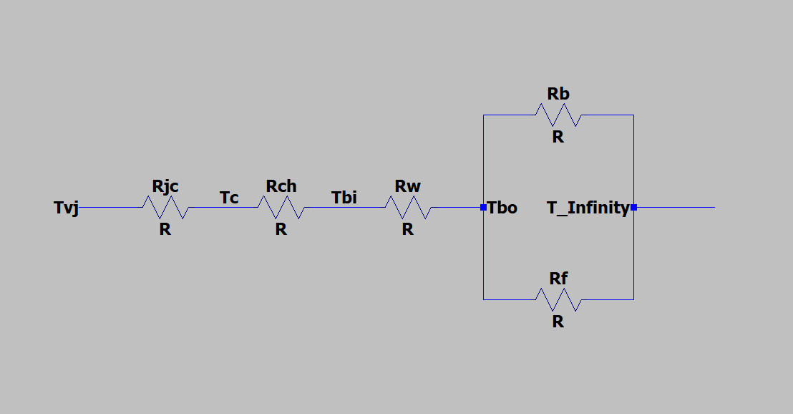
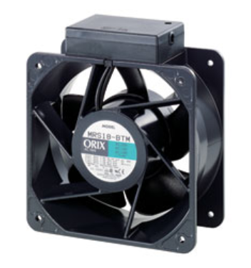
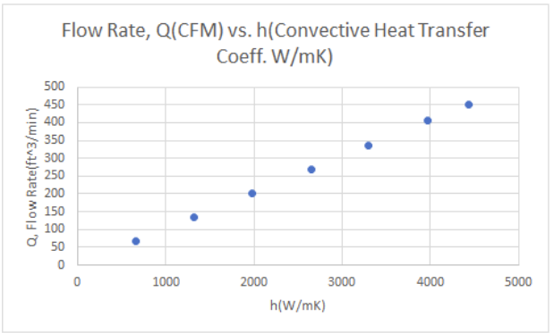
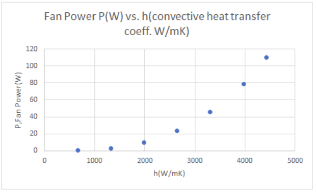

Heat Transfer: Heat Sink Design Project
This project was a two-part project for my Heat Transfer class that I took during my Junior year at RPI. It involved designing a heat sink and finding a corresponding fan for the system to maintain a Thyristor within certain thermal constraints. For the first part of the project, a heat sink was designed to satisfy the thermal constraints of the system. The design shown above was used, with the heat sink deploying 81 pins in a 9x9 array to effectively cool the Thyristor using convective heat transfer.
 The diagram above shows the resistance circuit that models the Thyristor system. It depicts how heat from the system travels from the Thyristor (Tvj) to the heat sink(Tbo) through conduction and then leaves the system via convection. The lumped capacitance method was used for the transient thermal analysis and radiation and conduction in the system were neglected. The system was then solved with these assumptions. Steady-state analysis used standard pin-fin array equations. While the transient analysis used the simplified transient conservation of energy equation to determine the temperature of the system and validate the system design. The second part of the project used the heat sink design to find a fan that could be used to satisfy conditions assumed during the project. An iterative approach was used to solve for the fan properties. An initial air velocity guess was used and then the dimensionless Reynolds number, Prandtl number, and Nusselt number were calculated iteratively until the values stabilized to achieve more accurate results. The required volumetric flow rate and pressure drop of the fan were then calculated, and a fan was selected to satisfy these requirements. The fan we chose is shown above.
We then used the heat flux equation and the conservation of energy equation to determine the relationship between the fan power and h, the convective heat transfer coefficient, and the relationship between the volumetric flow rate and h. The plots are shown below. They demonstrate that the convective heat transfer coefficient that we used for our calculations is within the limitations of the fan we selected for our system.
 Videos covering the project in greater detail:
Video 1Video 2
Contact Me
Email (preferred contact method): michael.aksen@gmail.com
Phone #: 201-982-1776